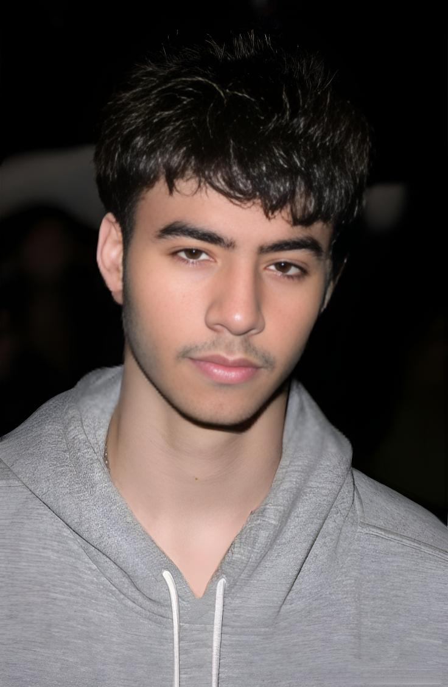

About Me
Hey! I’m Mohsin Noor, a passionate Computer Science student, Web Developer, and Cyber Security enthusiast. I love building creative, fast, and secure websites that provide smooth user experiences.
Besides coding, I enjoy designing logos, exploring new technologies, and learning about cybersecurity. I also have a strong interest in cryptocurrency and have gained experience in trading and blockchain fundamentals.
Location: Saudi Arabia
Hobbies: Working out at night, exploring new places
Skills: HTML, CSS, Java, Cyber Security
